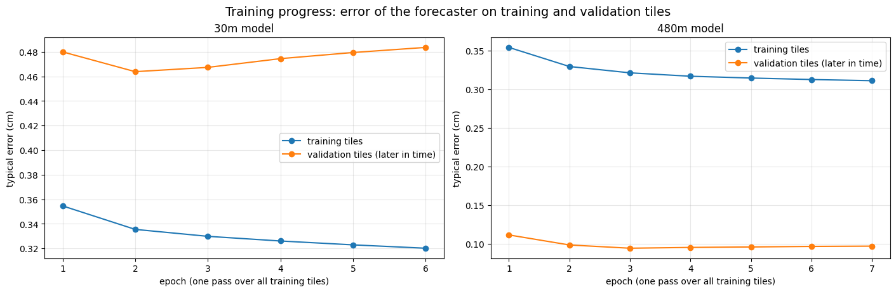
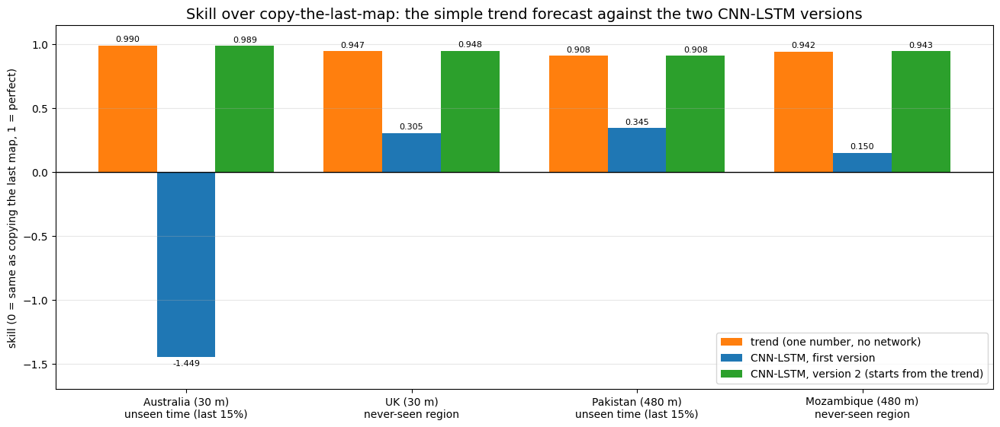
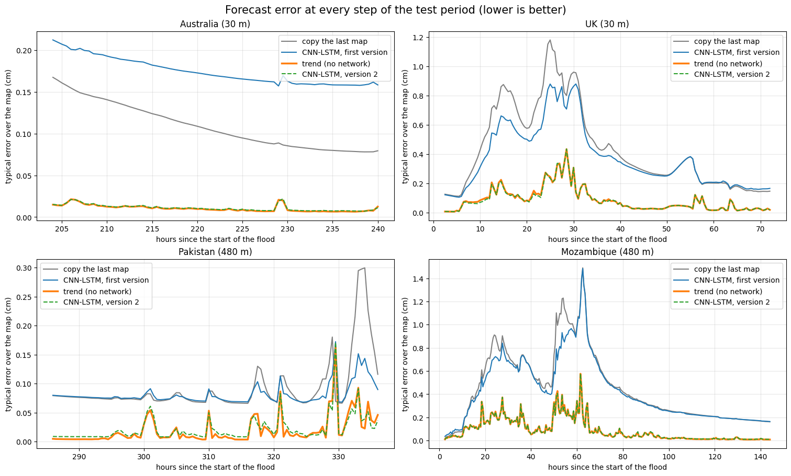
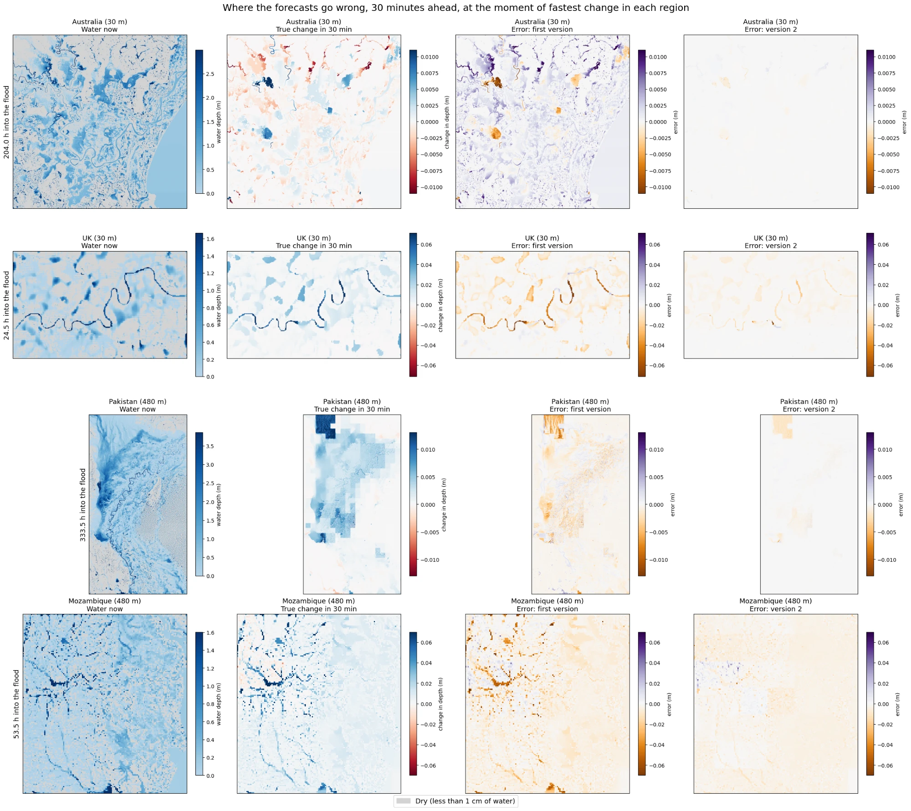
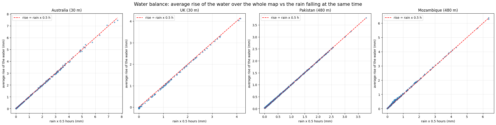
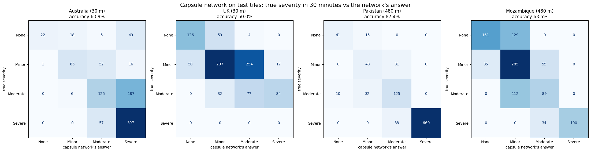
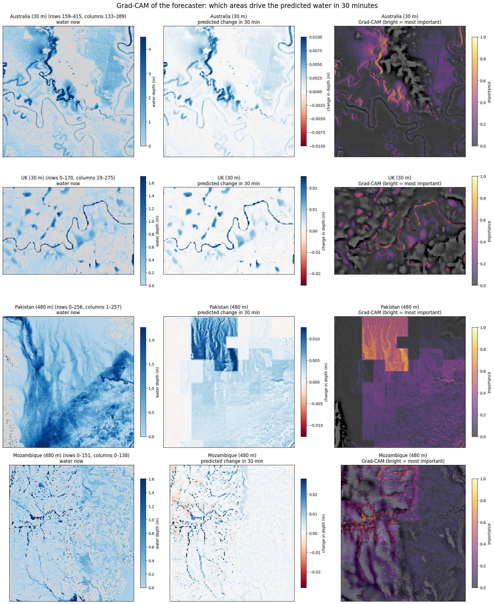
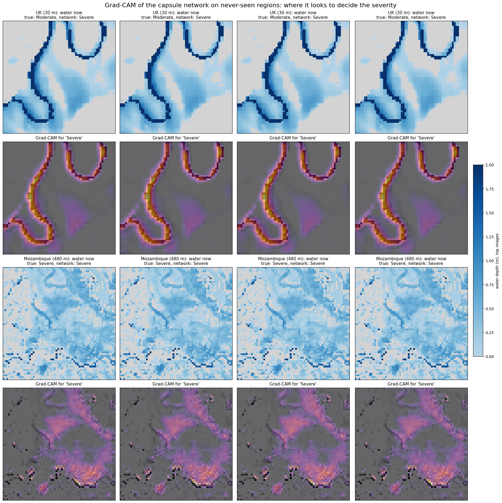

A plain-language guide to the project: what we did, why, what came out, and what is still weak
We teach a computer program to look at maps of a flood and predict where the water will be 30 minutes later. The program learns from four floods (Australia, the UK, Pakistan and Mozambique). We test it on a flood it has never seen and compare it with two very simple guesses: “the water stays exactly where it is now” and “the water keeps changing the way it just changed”. On top of the main program we added three extras the course asks for: a capsule network that rates how bad the flooding is, Grad-CAM pictures that show where the program is looking, and written rules (the “NeuroSymbolic” part) that check the program’s answers with common sense and physics.
When a river floods, people need to know where the water is going next: which roads, fields and houses will be under water soon. Forecasting even a short time ahead gives time to warn people and move them.
We use a public dataset called FloodCastBench (Xu and others, published in the journal Scientific Data, 2025). The authors took four real floods and re-created them in a computer simulation: a program that uses the laws of how water flows (water runs downhill, rain adds water, rough ground like forest slows it down).
The flood maps are simulated, not photos from satellites. The simulation is built from real ground heights and real satellite rainfall, so it is realistic, but it is still a simulation. This is normal for research like this, because real measurements of water depth every few minutes over a whole region do not exist.
| Flood | When | Size of one map square (cell) | Map size | Length |
|---|---|---|---|---|
| Australia | Feb – Mar 2022 | 30 m × 30 m | 1073 × 1073 cells (about 32 km wide) | 10 days |
| UK | Dec 2015 | 30 m × 30 m | 170 × 275 cells | 3 days |
| Pakistan | Aug 2022 | 480 m × 480 m | 810 × 441 cells (about 390 km tall) | 14 days |
| Mozambique (Cyclone Idai) | Mar 2019 | 480 m × 480 m | 151 × 138 cells | 6 days |
Think of each map as a grid of squares, like a chessboard with a million squares. For each square we know:
We have one map every 30 minutes, so each flood is like a flip-book of hundreds of pictures.
The dataset gives a flood at one or two map sizes. According to the dataset paper, the 60 m maps of Australia and the UK are the 30 m simulation results resized to a coarser grid. For Pakistan, the authors shrank the terrain and rainfall to 480 m and ran the simulation again at that size, so its 480 m maps are not resized copies of 30 m results. The paper does not say which of the two methods was used for Mozambique, so we do not claim either.
Before any learning, the raw files had to be cleaned and lined up. This was done in our earlier notebooks (Data_preparation and the pre-processing and visualisation notebook).
map at 1:00 map at 1:30 map at 2:00
|---- rain A ----|---- rain B ----|
To forecast the 2:00 map while standing at 1:30, the program may use rain A (it has already fallen) but not rain B (it is still in the future).
To know if a forecast is any good, we need something to compare it with. We use two very simple forecasts that need no learning.
“In 30 minutes the water will be exactly where it is now.” It costs nothing and needs no learning.
“In 30 minutes the water will have changed the way it changed in the last 30 minutes.” It is like guessing tomorrow’s temperature: if it got 2 degrees warmer between yesterday and today, you guess about 2 degrees warmer again. For each square, the forecast is the depth now plus the last change in depth times one number. That number says how much of the last change continues. It is 0.92 for the 30 m floods and 0.95 for the 480 m floods, and it was found using only the first part of the training flood, so the trend forecast knows nothing about the test floods.
Over 30 minutes a flood changes only a little, so even “copy the last map” is already very good. An earlier version of this project reported impressive-looking numbers without comparing to this yardstick; when compared, that version was barely better than copying. In the first version of this guide every result was shown only next to “copy the last map”. A later check showed that this was too easy a yardstick, because the trend forecast is much better than copying. So every result is now shown next to both.
| Skill value | Meaning |
|---|---|
| 1 | Perfect forecast |
| between 0 and 1 | Better than copying. For example 0.3 means the forecast removes 30% of copying’s error |
| 0 | No better than copying |
| below 0 | Worse than copying |
In formula form: skill = 1 − (forecast’s error ÷ copying’s error), where “error” is the sum of the squared differences between forecast and truth over every square. Skill is always measured against copying, so a skill of 0.9 for the trend forecast means it removes 90% of copying’s error.
The model has two parts, each with a job a person would also do when reading flood maps.
A CNN (convolutional neural network) is the standard tool for pictures. It slides small 3 × 3 “windows” across the map and learns to spot patterns: the edge of the water, a slope, a valley, a patch of heavy rain. The same windows are used everywhere on the map, so a valley is recognised wherever it is.
An LSTM is a network with memory. It reads the maps in order (2 hours ago, 1.5 hours ago, 1 hour ago, now) and keeps track of how the water has been moving: is it rising, spreading, draining? We use a ConvLSTM, an LSTM whose memory is itself a map, so every square remembers what happened around it. A normal LSTM would turn the map into a long list of numbers and lose the shape of the land.
After we found that the trend forecast beats the first version (see section 6), we built version 2 to see whether the same network could at least match it. It has the same 62,833 numbers to learn. We changed two things at once, the starting point and counting the correction in centimetres, so we cannot say which of them made the difference.
The model is small: about 63,000 numbers to learn (a phone photo has millions of pixels). Small is good here: it trains in minutes and is less likely to just memorise the training flood.
A 30 m square and a 480 m square behave very differently (water crosses a 30 m square in seconds, a 480 m square in minutes). So we train two separate models for each version:
| Model | Learns from | Tested on |
|---|---|---|
| 30 m model | Australia, first 70% of the flood | Australia, last 15% and the whole UK flood (never seen) |
| 480 m model | Pakistan, first 70% of the flood | Pakistan, last 15% and the whole Mozambique flood (never seen) |
The middle 15% of each training flood is used as a check during training (“validation”): if the model gets better on the training part but worse on this check, it is starting to memorise, and training stops.
Testing on a flood the model never saw is the honest test. It shows whether the model learned how floods behave in general rather than memorising one place. We only have one such test flood for each map scale, so the results rest on two training-and-test pairs.
The Australia map has over a million squares, too big to learn from all at once. So the model learns from 4,000 small square pieces (tiles) of 64 × 64 squares, cut at random places and times. Because the model only uses small sliding windows, the same learned model can afterwards be run on a whole map, which is how all results are measured.

Version 2 was trained the same way, on the same tiles. On the check tiles its error before training (the plain trend forecast) was 0.1885 cm for the 30 m model and 0.0243 cm for the 480 m model. After training it was 0.1868 cm and 0.0230 cm, so training only changed the forecast a little. All results in this guide come from a single training run per model.
| Flood | Tested on | Copy the last map: typical error | Skill: trend forecast | Skill: first version | Skill: version 2 |
|---|---|---|---|---|---|
| Australia | unseen last 15% | 0.11 cm | +0.990 | −1.449 | +0.989 |
| UK | never-seen flood | 0.52 cm | +0.947 | +0.305 | +0.948 |
| Pakistan | unseen last 15% | 0.10 cm | +0.908 | +0.345 | +0.908 |
| Mozambique | never-seen flood | 0.55 cm | +0.942 | +0.150 | +0.943 |
Skill is measured against “copy the last map” (section 3). The “typical error” of copying is averaged over the whole map, dry squares included, so over wet squares only it would be higher (for copying, the whole-map number is about 20% to 45% lower than the wet-squares number).
On the two floods the models have never seen, the first version beat “copy the last map” (skill +0.31 in the UK and +0.15 in Mozambique). But the trend forecast, with no network at all, scored +0.95 and +0.94. Version 2, which starts from the trend forecast, matches it (+0.95 and +0.94). So the forecasters are useful in the sense that they beat copying, and version 2 is as good as the strongest simple forecast we tried, but it is not yet better than it.
At 30 minutes ahead the trend forecast already removes 91% to 99% of copying’s error. So the most any model could still add is about 1% (Australia), 5% (UK), 9% (Pakistan) and 6% (Mozambique) of copying’s error. Version 2 differs from the trend forecast by 0.001 or less in every test, so at this horizon the network adds almost nothing to the trend.
At the end of the Australian flood the water is almost still: copying is wrong by only about 1 millimetre. The first version scored −1.45 there, worse than copying. We first explained this by saying that the model learned only from the rising, rainy part of the flood and never saw water draining away. That explanation does not hold. In 73 of the 331 training steps the average depth of the Australian map fell, so falling water was in the training data, and the last 15% is a very quiet period in which the average depth still rises slightly in every step. The trend forecast, fitted on the same training steps, scores +0.99 on that last part. The error maps below show what really went wrong: the first version predicts slightly too much water over most of the map, and misses the local rises and falls. Version 2 scores +0.989 there.



“NeuroSymbolic” means combining a neural network (which learns from examples) with written rules (which a person can read and check). Our first rule comes from physics.
In these simulations almost all of the rain stays on the ground, so the rise of the water matches the rain. According to the dataset paper, the Australian, UK and Mozambique simulations let water leave freely at the edge of the map, and the Pakistan simulation has a river flowing in. So some water does cross the edge, and the law below is only an approximation. If no water crossed the edge, then over the whole map:
average rise of the water in 30 minutes = rain (mm per hour) × 0.5 hours
With no rain, the total amount of water cannot change. It can only move around.
We first checked how well the data follows this law:

| Flood | Australia | UK | Pakistan | Mozambique |
|---|---|---|---|---|
| Total rise of the water ÷ total (rain × 0.5 h) | 0.999 | 0.946 | 1.028 | 1.045 |
So over a whole flood the water added differs from the rain by up to about 5%. The law holds closely, not exactly. Water crossing the edge of the map is a likely reason, and in 73 of the 331 training steps of the Australian flood the average depth even fell, which cannot happen from rain alone. The rise matches the rain of the same 30 minutes almost perfectly (correlation 1.00), and the rain of the 30 minutes before less well (0.93 to 0.97).
The neural network does not know this law, and the first version had picked up a small habit of adding a little water everywhere. After every forecast, the rule:
Where the water goes is still decided by the network. The rule only fixes the total.
| Flood | Copy + rule (no network) | First version | First version + rule | Trend forecast | Version 2 | Version 2 + rule |
|---|---|---|---|---|---|---|
| Australia | 0.000 | −1.449 | −0.710 | 0.990 | 0.989 | 0.989 |
| UK | 0.053 | 0.305 | 0.320 | 0.947 | 0.948 | 0.949 |
| Pakistan | 0.142 | 0.345 | 0.404 | 0.908 | 0.908 | 0.901 |
| Mozambique | 0.051 | 0.150 | 0.172 | 0.942 | 0.943 | 0.941 |
All numbers are skill against copying the last map. The trend-forecast-plus-rule scores are within 0.003 of the trend forecast alone.
The rule helped the first version in every flood and halved Australia’s problem, because that version added extra water. On version 2 the rule makes almost no difference (between −0.007 and +0.001) and makes Pakistan slightly worse. So we keep the rule as a physics check, not as an improvement. It is still a fair example of NeuroSymbolic AI: the network spots where the water goes, and a written rule makes sure the total is sensible. It just does not raise the score once the forecaster is good.
Besides the map, people want a simple rating: “how bad will it be here in 30 minutes?”. We cut the map into tiles of 64 × 64 squares and rate each tile by the share of its normally-dry land under more than 30 cm of water (rivers and lakes don’t count):
| Rating | Share of dry land under 30 cm+ of water |
|---|---|
| None | less than 5% |
| Minor | 5% – 15% |
| Moderate | 15% – 30% |
| Severe | 30% or more |
30 cm is roughly the depth at which water becomes dangerous to walk or drive through.
A normal network ends with one number per answer (“70% sure it’s Severe”). A capsule network ends with a small arrow (a list of numbers) per answer: the length of the arrow says how sure it is, and the direction of the arrow stores how the answer looks (where the water is, how it is spread out).
Inside, many small capsules each look at one part of the tile and “vote” for each rating. Votes that agree with each other get more weight in the next round (“routing by agreement”). It is like a group discussion where people who agree with the emerging opinion get listened to more. Our capsule network reuses the CNN + LSTM of the first version of the forecaster (frozen, so it already understands flood maps) and adds the capsule layers on top.

The capsule network works, but it is the weakest part. The rating in 30 minutes is almost the same as the rating now, and if you simply apply the rating rule to the forecaster’s predicted map, you get it right about 99% of the time (99.8%, 99.1%, 99.9% and 99.5% in the four floods). So the capsule network is doing a hard version of an easy job. Three more cautions:
The second set of written rules checks the capsule network’s rating. Each final answer comes with a written reason, so a person can see why the decision was made.
| Rule | If… | Then… |
|---|---|---|
| 1. No water, no flood | less than 1% of the land is flooded now and in the forecast | rating = None |
| 2. Rising water | the forecast shows at least as much flooding as now and it rained more than 1 mm/h in the last hour | rating can’t be lower than the current level |
| 3. Agree with the forecast | the capsule network’s rating is more than one level away from the rating of the forecast map | use the forecast map’s rating |
| Flood | Capsule network alone | Capsule network + rules | Answers changed by the rules |
|---|---|---|---|
| Australia | 60.9% | 67.9% | 7% |
| UK | 50.0% | 56.1% | 6% |
| Pakistan | 87.4% | 89.1% | 2% |
| Mozambique | 63.5% | 70.7% | 7% |
The rules improve the rating in every flood, by up to 7 percentage points. Example of a written reason from the results: “Rule 2: water rising during rain, so at least Moderate (the current level).”
All three rules use the flooded share of the map now or in the forecast, which is almost always a good guide to the rating. Rules 1 and 2 did most of the work (rule 1 fired 134 times in Mozambique and rule 2 fired 40 times in the UK), and rule 3 replaced the capsule rating by the forecast map’s rating in 21, 21 and 10 tiles in Australia, the UK and Pakistan. So the gain says more about the rules than about the capsule network.
Neural networks are often called “black boxes”. Grad-CAM opens the box a little: it makes a heat map showing which parts of the map most influenced the answer. Bright means very important, dark means ignored.
How it works, in plain words: we ask “if this part of the model’s memory changed a little, how much would the forecast change?”. Parts that would change the forecast a lot are important, and are painted bright.
These are sensible places. But the heat maps are illustrations, not proof. In our earlier laptop study, a check of the capsule network’s heat maps found that they changed a lot from one training run to another, and we have not run such a check on the pictures in this guide.


These are worth mentioning: they show the results were checked, not just accepted.
To help the model learn from interesting places, the first version kept only 20% of the “calm” tiles where nothing changes. The result: the model almost never saw “no rain, nothing happens”, and learned that water always rises a little. It added water everywhere, even over the sea. Fix: keep all tiles. Australia improved from −12.7 to −1.45, and calm periods in the other floods stopped losing to copying.
Grad-CAM must keep every intermediate step in the graphics card’s memory, and the full Australia map (over a million squares) did not fit. Fix: zoom into a 256 × 256 window around the area of fastest change.
At the start of the Mozambique flood the map was almost dry. The first version of the rule piled all the missing rain onto the few wet squares. Fix: rain falls everywhere, so missing rain is now spread over every square. Mozambique went from +0.03 back to +0.17.
We had only compared the forecaster with “copy the last map”. A later check scored the trend forecast in exactly the same way: same whole maps, same test parts, same score. We checked the check itself: scored separately on the raw files, copying’s error matched the notebook’s table to three decimals in all four tests, and the trend scores came out the same when the check was run inside the notebook. The trend forecast scored 0.91 to 0.99; the first version only 0.15 to 0.35, and −1.45 for late Australia. That also showed that our explanation for late Australia (“it never saw draining water”) was wrong, because the training data did contain falling water. Fix: version 2, which starts from the trend forecast. It now scores the same as the trend forecast. We do not yet know whether starting from the trend, or counting the correction in centimetres, did the fixing.
Flood maps are pictures. A CNN is the standard tool for pictures: it learns to spot local patterns (water edges, slopes, rain patches) and recognises them anywhere on the map.
A single picture doesn’t tell you whether water is rising or falling, and a flood is a sequence of maps. So the architecture we set out to build is a CNN with an LSTM, and we use a ConvLSTM so its memory keeps the shape of the map. We then tested it fairly. For a 30-minute forecast, continuing the trend already gets 91% to 99% of the possible improvement over copying, and the LSTM version adds only about 0.001 on top. Memory should matter more for longer forecasts, so that is what we test next.
We have not tested bigger models. We only have four floods, so we kept the model small (about 63,000 numbers); it trains in minutes. At 30 minutes ahead there is also little left to gain, at most about 1% to 9% of copying’s error.
We compare it with two simple forecasts: “copy the last map” and “continue the trend”. The first version beat copying but not the trend. Version 2 matches the trend. So it is as good as the strongest simple forecast we tried, and not yet better.
Floods change smoothly: water that has been rising tends to keep rising for a while, and water that has been draining keeps draining. Over 30 minutes the next change is close to the last change. This is why we always compare with it.
It is the time between two maps in the data, and the simplest honest starting point. The results also show a limit: at 30 minutes the trend forecast already does almost everything, so longer forecasts (several hours) are where a learning model may have more to add. They are the next step.
In two places. (1) A physics rule, conservation of water, corrects the forecaster’s total amount of water. It helped the first version and makes almost no difference to version 2. (2) Three written if-then rules check the capsule network’s rating and give a written reason for each decision. They raised its accuracy in every flood, partly because the rules use the flooded share of the map now and in the forecast, which is almost always a good guide to the rating.
It keeps not just “how sure” but also “how it looks” (the direction of its output arrows), and its voting system lets parts of the tile agree on an answer. It works, but honestly, for a 30-minute rating a simple rule on the forecast map is better, and we have not compared it with a plain output layer. The plan is to give it a harder job.
Which parts of the map the model relied on. It lights up rivers, flood edges and rain patches, which are sensible places. It is an illustration; we have not tested how stable these pictures are.
It did for the first version. That version added a little water over most of the map, which matters when the water hardly moves: at the end of that flood, copying is wrong by only about 1 mm. Version 2, which starts from the trend forecast, scores +0.989 there.
No. Each rain file covers the next 30 minutes, so we only give the model rain from earlier files, which has already fallen.
A 30 m square and a 480 m square behave very differently: water moves across them at very different speeds. One model for both would be confused.
| Word | Plain meaning |
|---|---|
| Cell / square | One square of the map grid (30 m or 480 m wide) |
| Neural network | A program that learns a task from many examples instead of being told the steps |
| CNN | Convolutional neural network: a network for pictures that slides small pattern-detectors across the image |
| LSTM / ConvLSTM | A network with memory that reads things in order; the ConvLSTM’s memory is a map |
| Training | Showing the network examples and nudging its numbers to make its answers less wrong |
| Validation | A held-back part of the data used during training to notice memorising |
| Test | Data never used in training, used only to measure the final result |
| Tile | A small square piece of the map (64 × 64 cells) |
| Copy the last map | The first yardstick forecast: “the water stays where it is” |
| Trend forecast | The second yardstick forecast: “the water keeps changing the way it just changed”. It has one number and no network |
| Version 2 | The CNN-LSTM that starts from the trend forecast and learns only a correction |
| Skill | How much of copying’s error a forecast removes. Above 0 = better than copying, 1 = perfect |
| Capsule network | A network whose outputs are small arrows: length = how sure, direction = how the answer looks |
| Routing by agreement | The capsule network’s voting: parts that agree get more say |
| Grad-CAM | A heat map showing which parts of the input most influenced the answer |
| NeuroSymbolic AI | Combining a learning network with written rules that people can read |
| Water balance | Water can’t appear from nowhere: the total only grows by the rain that falls |
| Simulation | A computer re-creation of the flood using the laws of water flow |
The numbers in this guide come from the outputs of the notebook Flood_model_updated (with the added comparison cells) and from the comparison with the trend forecast, scored on the same whole-map, 30-minute test.